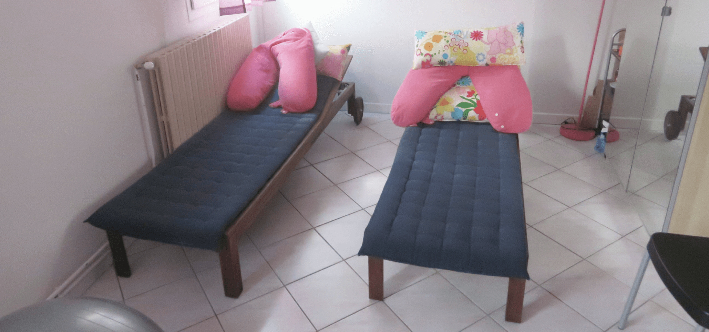
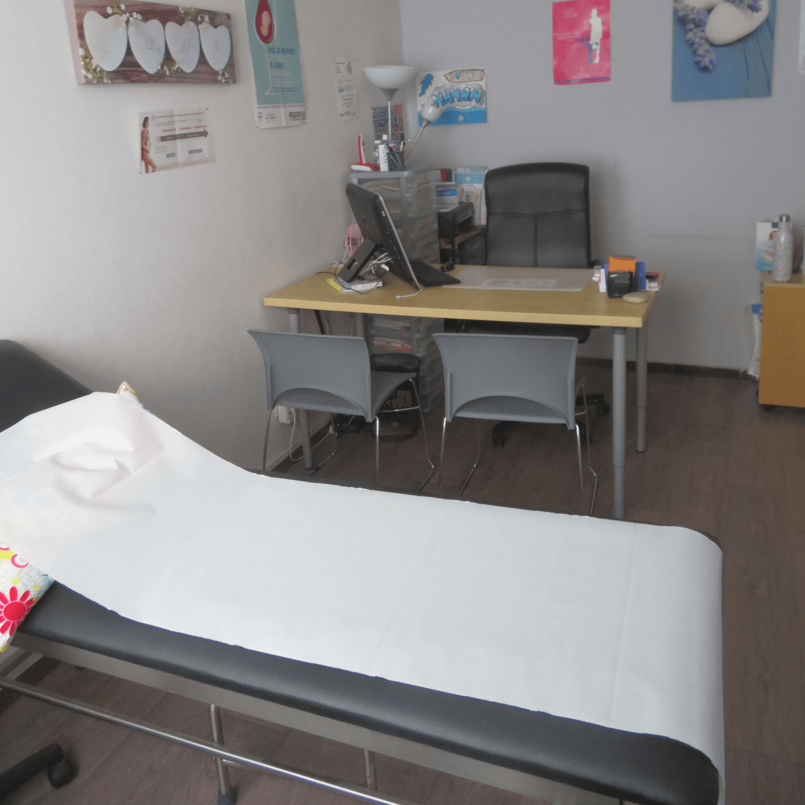
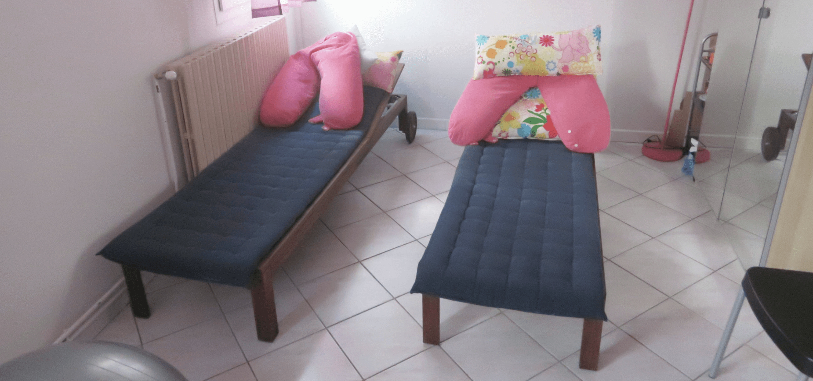
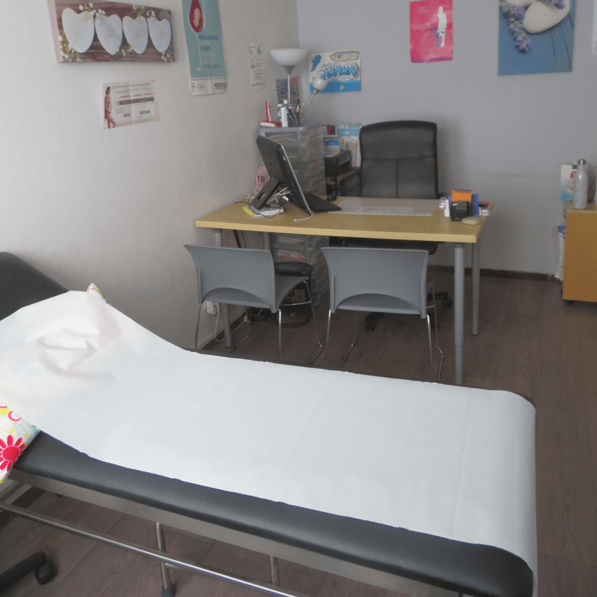

Consultation gynécologique
Nous réalisons les consultations gynécologiques de prévention et de contraception, ainsi que les frottis. Nous posons les stérilets et les implants contraceptifs, et nous pouvons prescrire les échographies, mammographies et bilans sanguins, ainsi que la contraception dès l’adolescence, sans autorisation parentale, prise à charge à 100% par la Sécurité Sociale jusqu’à 18 ans. Nous pouvons également vous proposer une consultation “préconception” afin de répondre à toutes vos questions et de préparer votre grossesse en toute sérénité.